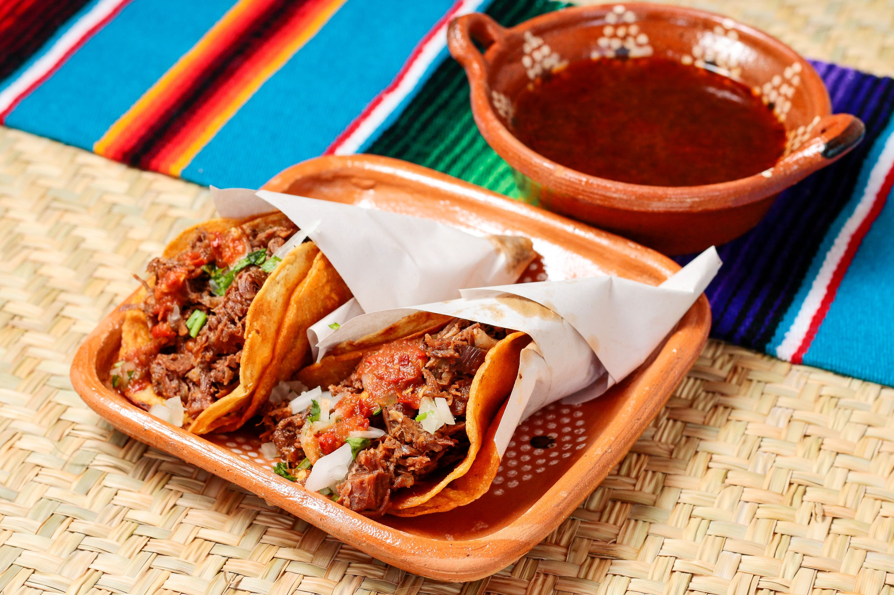
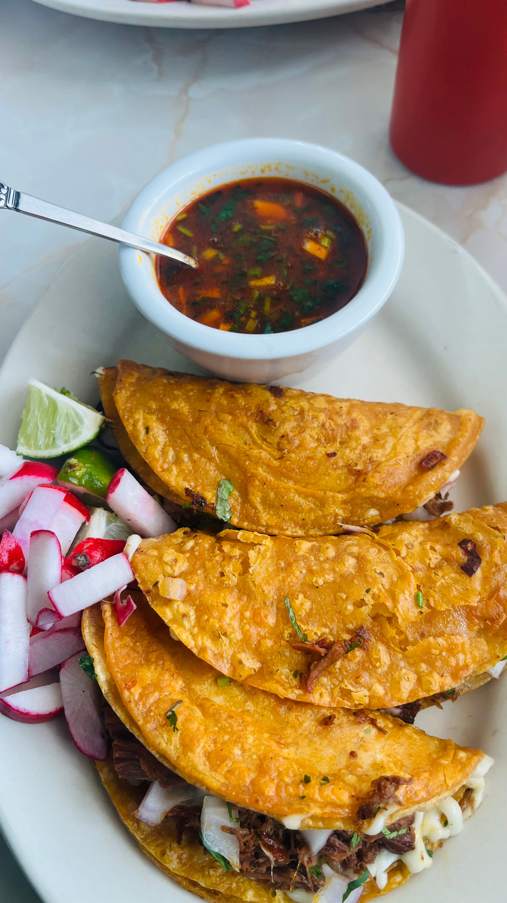
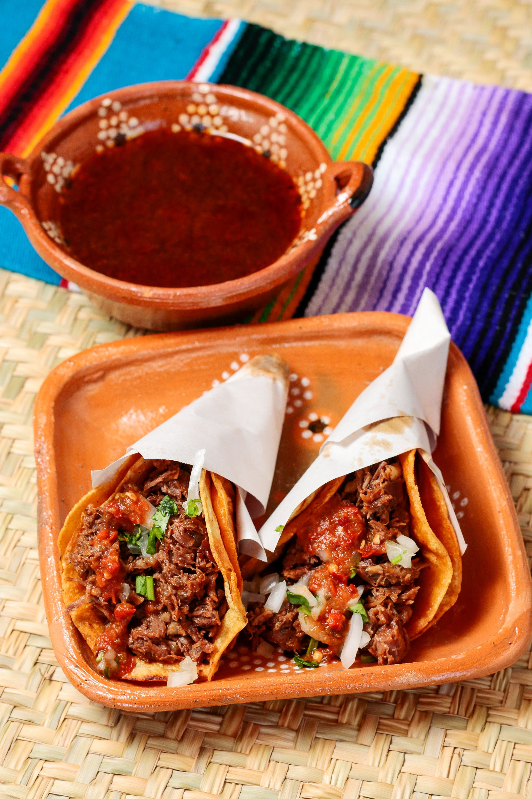
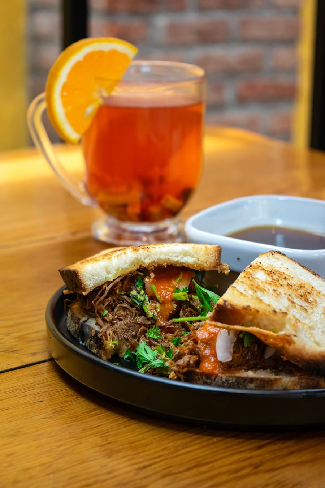

Birria de res
Tradición, especias y mucho sabor: uno de los platillos más representativos de la gastronomía mexicana.

Historia y origen
La birria es un platillo tradicional originario del estado de Jalisco. Aunque originalmente se preparaba con carne de chivo, con el paso del tiempo surgieron variantes elaboradas con carne de res.
Su preparación se caracteriza por el uso de diferentes chiles secos, especias y una cocción lenta que permite obtener una carne suave y llena de sabor.
Actualmente, la birria se disfruta en distintas regiones de México, tanto en celebraciones familiares como en restaurantes y puestos de comida. Puede servirse en caldo o como relleno de tacos, acompañada de cebolla, cilantro y limón.
Receta de birria de res
Una versión casera de este platillo tradicional, preparada con carne de res, chiles secos y especias.
Ingredientes
- 1.5 kg de carne de res para cocción lenta
- 5 chiles guajillo, limpios y sin semillas
- 3 chiles ancho, limpios y sin semillas
- 2 jitomates
- 4 dientes de ajo
- 1/2 cebolla blanca
- 2 hojas de laurel
- 1 cucharadita de orégano seco
- 1/2 cucharadita de comino
- 3 clavos de olor
- 1/4 de taza de vinagre blanco
- Sal y pimienta al gusto
- Agua o caldo de res, cantidad necesaria
Preparación paso a paso
- Preparar los chiles: Retira las semillas y los tallos de los chiles. Hidrátalos en agua caliente durante 10 minutos.
- Preparar el adobo: Licúa los chiles hidratados con los jitomates, el ajo, la cebolla, el vinagre, el orégano, el comino, los clavos y un poco de agua.
- Marinar la carne: Coloca la carne en una olla y cúbrela con el adobo. Añade sal, pimienta y las hojas de laurel.
- Cocinar lentamente: Agrega suficiente caldo o agua para cubrir parcialmente la carne. Cocina a fuego bajo, con la olla tapada, durante aproximadamente 3 horas o hasta que esté muy suave.
- Deshebrar: Retira la carne de la olla y deshébrala con ayuda de dos tenedores.
- Servir: Sirve la birria con su consomé o en tacos, acompañada de cebolla, cilantro y limón.



Aprende a preparar birria de res
¿Quieres ver cómo se prepara? Descubre el proceso paso a paso en este video.